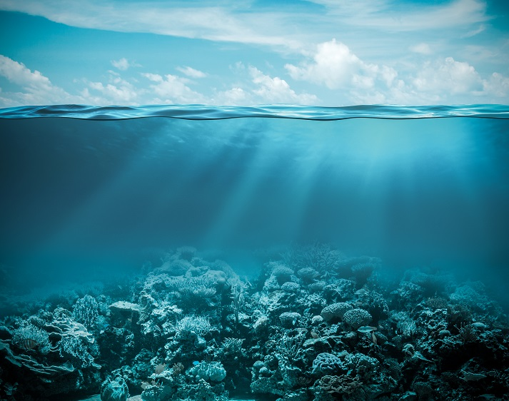
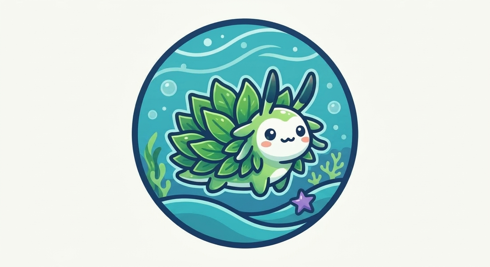
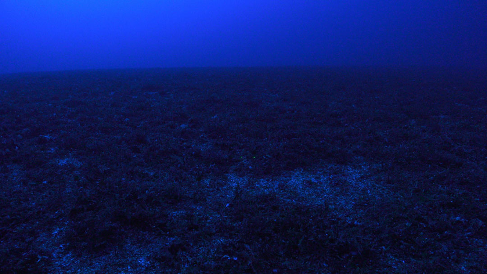
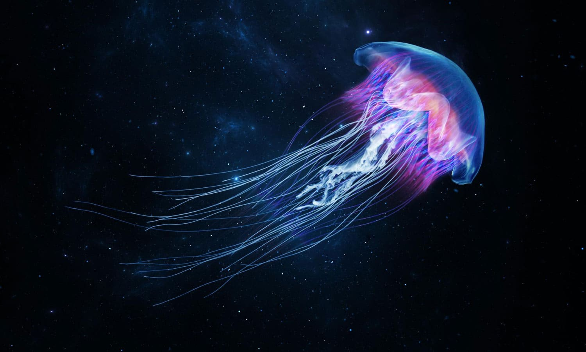
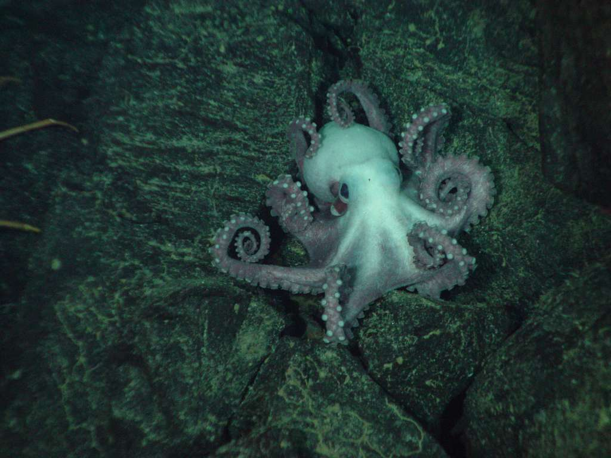
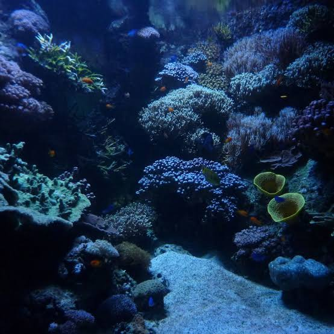

1.Sunlight Zone
0-200 meters
This is the brightest ocean zone. Sunlight reaches the water, allowing plants and algae to grow. Many fish, turtles, and dolphins live here.

Explore the main 5 Ocean zones

0-200 meters
This is the brightest ocean zone. Sunlight reaches the water, allowing plants and algae to grow. Many fish, turtles, and dolphins live here.

200-1,000 meters
Only a small amount of sunlight reaches this zone. It is too dark for most plants to grow. Some animals have large eyes to help them see.

1,000-4,000 meters
No sunlight reaches this zone. It is very cold and dark. Some creatures produce their own light to attract prey or communicate.

4,000-6,000 meters
This zone has freezing temperatures and extremely high pressure. Only specially adapted animals can survive in these conditions.

6,000-11,000 meters
The deepest ocean zone is found in underwater trenches. It is one of the most extreme environments on Earth.